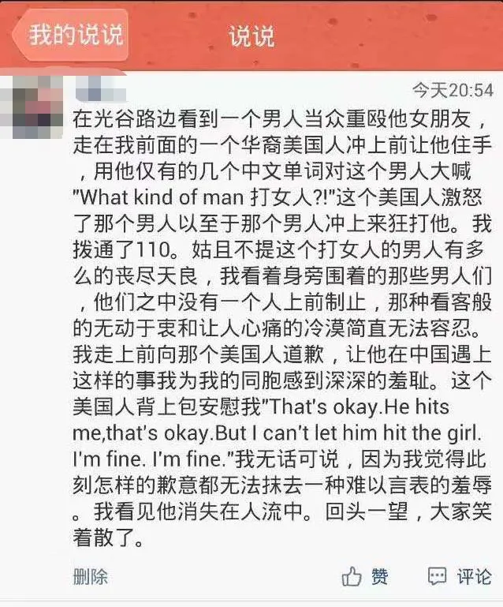
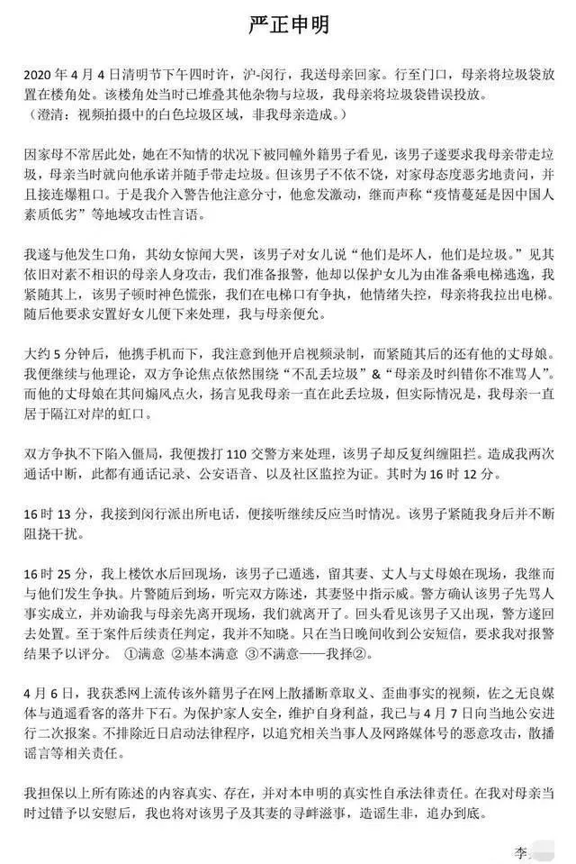
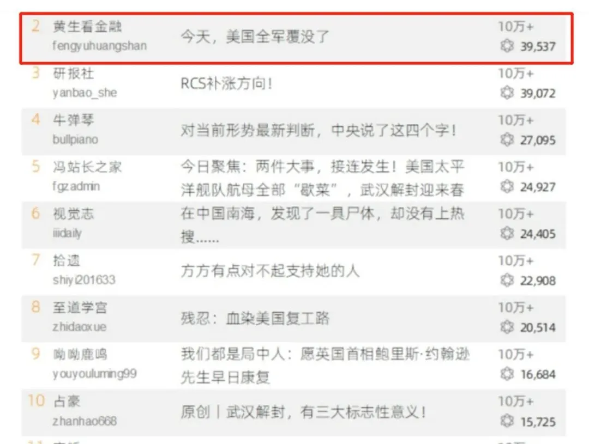

“碍国贼”升级 凛冬将至
那个美国人背上背包安慰我：“That’s okay.He hits me,that’s okay.But I can’t let him hit the girl.I’m fine.I’m fine.”我无话可说，因为我觉得，此刻，怎样的歉意都无法抹去一种难以言表的羞辱。我看见他消失在人流中。回头一望，大家笑着散了。”
图自《权力的游戏》冰龙剧照
有两天没有更新了。
上一篇是《我们都是局中人：愿英国首相鲍里斯·约翰逊先生早日康复》，发完之后，因为竟然敢公开祝愿英国首相康复，被扣上一顶又一顶大帽子，当然还有很多人身攻击的棍子，一根又一根。
黄钟毁弃，瓦釜雷鸣，这似乎是一个“碍国贼”当道的时代，假作真时真亦假，正常的也成了不正常。刚开始我还回怼一下，后来干脆就懒得理了。许多人取关了我，我也拉黑了许多人，嗯，凛冬将至，这是一个绝交的时代。
我并不是一个多么心硬的人，所以，面对这一波冲击，还是花了一些时间来做心理建设。现在，本鹿满血复活了。干脆，顺着前面的话，再聊一点。
前两天我写了一篇《想起那位没名没姓的老人——尽量保护喊一嗓子的人》。随后，一位朋友和我分享了一个亲历：
“在光谷路边看到一个男人当众重殴他女朋友，走在我前面的一个华裔美国人冲上前让他住手，用他仅有的几个中文单词对这个男人大喊‘What kind of man打女人？！’这个美国人激怒了这个男人，以至于这个男人冲上来狂打他。我拨通了110。姑且不提这个打女人的男人有多么丧尽天良，我看着身旁围着的那些男人们，他们之中没有一个人上前制止，那种看客般的无动于衷和让人心痛的冷漠简直无法容忍。我走上前向那个美国人道歉，让他在中国遇上这样的事，我为我的同胞感到深深的羞耻。那个美国人背上背包安慰我：“That’s okay.He hits me,that’s okay.But I can’t let him hit the girl.I’m fine.I’m fine.”我无话可说，因为我觉得，此刻，怎样的歉意都无法抹去一种难以言表的羞辱。我看见他消失在人流中。回头一望，大家笑着散了。”

截图中马赛克是我加的
这是2014年在武汉光谷的事，当时他是华中师范大学的学生。（我十几年前也曾在武汉读书，也常去光谷）上面这个截图，是当年他在“说说”上记录并截图留存的。
就在与这位朋友沟通的时候，我还看到一则上海的视频。闵行一个小区里，有一对母子，在楼栋门口随处扔垃圾，恰好被一位外国人发现。这位“老外”说垃圾应该扔不远处的垃圾桶，不应该在这里，这是基本素质问题。结果，母子反击，报警：“有老外侮辱中国人，骂中国人垃圾”。老外用尽毕生所学汉语，结巴结巴说：“不对，不对，你干嘛这样说，没有，没有，说谎，说谎，骗人，骗人”。
大家看这个视频，从双方的态度、语言上，有生活经验的人，应该能知道一二了。
这其实是已经过去几天的事。本不想再提，但是，后来我又注意到这位上海男子李某通过《大河报》发布的《严正申明》：

读完这份申明，我更对国人言行感到惭愧。
李某在声明里承认乱扔垃圾被“老外”指正的事实。“我遂与他发生口角，其幼女惊闻大哭。”“我们准备报警，他却以保护女儿为由准备乘电梯逃逸，我们紧随其上，该男子顿时神色慌张，我们在电梯口有争执，他情绪失控，母亲将我拉出电梯。随后他要求安置好女儿便下来处理，我与母亲便允。大约5分钟后，他携手机而下。”
从视频我们可以看到一个基本事实：这位老外并未侮辱中国人集体（从他迅速的NONONO上很明显说明他的意识并无辱华心态），而只是具体地指出随意扔垃圾“是不对的”。
从李某申明上，我们还可以看到一个过程：李某反击老外，令老外的女儿吓得大哭；为了保护女儿，老外带女儿走向电梯送她回家；李某却斥之为“逃逸”，母子“紧随其上”，令“老外”神色慌张；在电梯口的争执让“老外”情绪失控。于是老外说安置好女儿就下来处理；然后，他只用5分钟就下来了。
我很难相信一个带着幼女的爸爸会在陌生人面前恶意侮辱他人，乃至侮辱一个国家。但是，我很能理解一个爸爸在女儿被人吓得大哭后的着急。他情绪为什么失控？不是为了自己，这样的人根本没有胆怯，他只是着急大哭的女儿为此受到了惊吓。这位“老外”干了什么呢？他只不过是指出“乱扔垃圾是不对的”而已。他只不过是路见不平一声吼而已。
在《大河报》的报道最后，还说，“事后，李先生多次看到母亲当天丢垃圾的地方仍有垃圾，问了环卫工人是否可以扔垃圾，环卫工人回复说不应该在此处丢垃圾，但是会有人在此处丢垃圾。”
这位李某的逻辑，简直令人无语。还有别人扔垃圾，就证明你扔垃圾是对的？照这样说，只要还有别人在当众殴打弱小，就证明你打起来可以心安理得？这位老外不去指出其他居民的不对，而只指出你的不对，就是有意针对你？你为什么不学学人家老外，也去纠正其他邻居乱扔垃圾的行为呢？
这位李某现在要求老外赔偿他的精神损失，要求道歉。在我看来，恐怕是那位老外一家的精神损失更大。
如果这位“老外”能看到本文，我希望你能消消气。请你相信，不是所有中国人都那么没素质的，至少我是帮理不帮亲，呦呦鹿鸣坚决支持你路见不平一声吼。对就是对，不对就是不对；乱扔垃圾，就应该批评教育，和国籍无关。
现在我们来看，2014年和2020年的这两件事，有什么不同？
本质都是有人在公众场合胡作非为，然后老外路见不平喊了一嗓子，遭到反扑。但是，结果不同，多出了一点东西。2014年的事件里，大家只是围观这位老外被人痛殴，然后，其中一位良心未泯的大学生上前致歉安慰。这就是民间的道德选择与民事冲突问题。2020年的事件里，当事人不仅将老外的幼女吓得大哭，而且第一时间想到以“老外侮辱中国人”的名义报警，理直气壮地要求老外赔偿精神损失。
多出来的，就是“侮辱中国人”。被伪装过的民族仇恨、国家冲突，进入了民间民事冲突与道德领域，并成为主导。明明是个人自己的事，动不动就绑架“国家”，绑架“中国人”全体。连好好说话都不再可能。
我们为什么要让这些“老外”来教大家怎么做一个正常人呢？这已经够不正常的了。但是，如今，“碍国贼”们升级了，他们得心应手地拿起“爱国”当做自己胡作非为的挡箭牌。类似上述事件，层出不穷，事件之后的“理直气壮”，也屡见不鲜。
这些理直气壮是从哪里来的？这些年来，有一批以“战狼”自命的人，在各路不良写手和媒体的簇拥之下，枉顾“命运共同体”的呼吁和“改革开放”的基本国策，拼命煽动国际对立情绪，天天喊打喊杀。一点芝麻绿豆点小事，就上升到“侮辱中国”“滚出中国”“脱钩”“决战”，甚至，没事也编出事来，恨不得与全世界所有文明国家宣战、决裂，重回“片板不得入海”的闭关锁国时代。明明我们中国是全球化的最大受益者，这些人却要全球开战；国家全体苦干多少年的经济发展成果，多少企业多少家庭的生计饭碗，他们毫不爱惜。狭隘的快感屏蔽了大脑的思考，恶毒的语言冲垮了做人的底线，千千万万万万千千，这些所谓的“人”声嘶力竭、相互呼应，竟比当年义和团的声势还要浩大。
变态者的声量是如此之大，乃至，正常人不敢发出正常的声音。对同胞的痛苦冷眼旁观，对挺身而出的人棍棒相加，对人道对文明拒之千里之外；且不说现代文明价值，传统的礼义廉耻也弃若敝屣；我们不禁要问：中国的经济发展了，文明也随之进步了吗？
举个例子，最高领导人曾说过：“中美两国关系好，不仅对两国和两国人民有利，对世界也有利。我们有一千条理由把中美关系搞好，没有一条理由把中美关系搞坏。合作是中美两国唯一正确的选择。”可是，在每天微信公众号原创内容传播排行榜上，有一个长期都在全国前三名之列的公众号——“黄生看金融”，几乎每篇文章在在煽动中美进入战争状态，而且拥趸极多。过去30天，这个公众号的标题列表如下（时间由近及远）：
无耻又无能，刚刚特朗普又挑起了战火【4月10日】
今天，美国全军覆没了
太无耻了，最高领导人都快挂了，还想向中国索赔
今天，最危急的珍珠港时刻来了
极度无耻，惊天大丑闻
今天，大撤退，美国的大溃败来了
刚刚，史诗级谎言，世界级大战
今天，特朗普终于哭了，这是一场灾难
丧心病狂，美国想搞死华为，中国必须反击
触目惊心，死220万人，特朗普终于害怕了
刚刚，特朗普宣战，这是美国内战
今天，美军彻底被干趴下了，这次真的是报应来了
团灭，真的是报应，苍天饶过谁
刚刚，极度无耻，美国的重大阴谋被粉碎
今天，特朗普投降了，失道寡助
震惊，丧尽天良，准备牺牲几千万人
疯了，生死时刻，惊天大救市
刚刚，惊天阴谋败露，一场网络战打响
危机时刻，特朗普的灾难来了
惊天大丑闻，美国堕落，直接裸奔了
今天，大危机来了，史诗般上涨
今晚，美国坠落，血流成河
今天，极度无耻，美国病人和美国病毒
刚刚，末日大崩盘，美国的国运到头了
惊人真相，特朗普感染新冠肺炎之谜
丧心病狂，几千万人感染，死几十万人
惊天真相，美国欺骗了全世界
刚刚，惊天大崩盘，血流成河
震惊，没有比这更无耻的了
刚刚，特朗普的危险来了
今晚，史诗般崩盘，世界级大战【3月10日】

昨天的排行榜，在第二位，在看人数接近4万人
注意，这些文章，每天都在排行榜最前列，每篇文章点亮“在看”人数都是数万人，这意味着每天的自发传播在百万级。这些文章——什么“美国投降”，什么“美国全军覆没”，什么“血流成河”——且不说违背事实本身，仅仅标题来看，就全是中美战争、世界级大战。这类文章，是让中国和平发展国际环境恶化的推手。让我想起上海那位老外情急之下的话：“不对，不对，你干嘛这样说，没有，没有，说谎，说谎，骗人，骗人”。
同样的媒体平台，还有好几个，形成了一个庞大“集群”。试问，假如美国人发表这样的文章，把这些标题里的美国换成中国，天天在排行榜最前面，我们会作何感想？奇怪的是，写这样的文章、传播这样的文章，丝毫不需要担心安全问题。
正是因为有这样的社会舆论、思潮背景，那位李某，才会在一个小小的垃圾问题上，理直气壮地以“老外侮辱中国人”报警。
那类“爱国者”中，一些是做着“爱国生意”镰刀飞舞的聪明人，这是假傻（大家可以搜搜“黄生看金融”作者创办的互联网金融平台喜投网是做什么的、最近结果如何了）；一些是伸长脖子嗷嗷叫等着被收割的“自甘”牌韭菜，这是真傻。他们联合起来，要让中国的社会充满戾气，要让中国人的素质不断堕落，要消解中国人团结到正义身边的向心力，要让中国自绝于文明世界。他们口口声声愿意为国家牺牲一切，却不愿意为身边的受害者付出哪怕一点点。他们口口声声爱国，其实都是“碍国贼”。
改革开放几十年后，我们国家急需再进一步，而他们就是最大的障碍。甚至，中国几十年来快速现代化的进程，都可能因此中断，届时，后果不堪设想，这不仅关乎国家，而是首先关系每个家庭的财产和生活。在未来的较长时间中，我们发展的外部环境都将充满变数，步步惊心。
忧之。
20200411，呦呦鹿鸣
原网址: 访问
转载请注明来源，欢迎对文章中的引用来源进行考证，欢迎指出任何有错误或不够清晰的表达。可以在下面评论区评论，也可以邮件至 memo_hanabi@outlook.com
文章标题:“碍国贼”升级 凛冬将至
文章字数:3.7k
本文作者:呦呦鹿鸣
发布时间:2020-04-11, 20:25:14
最后更新:2020-04-14, 21:28:09
原始链接:https://mmspace.now.sh/hindering-country-thief-upgrade/版权声明: "署名-非商用-相同方式共享 4.0" 转载请保留原文链接及作者。